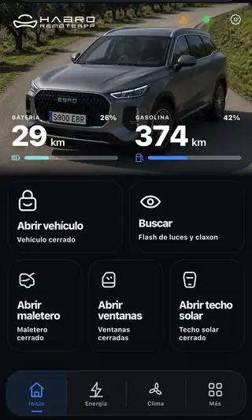

Control remoto
Puertas, maletero, ventanillas, techo solar y búsqueda del coche desde un panel táctil unificado.
DisponibleControl remoto, climatización, energía, avisos y automatizaciones inteligentes sobre Home Assistant. Una experiencia creada para sacar más partido a tu EBRO S900 sin saltar entre aplicaciones.

HABRO convierte las entidades reales de tu EBRO y Home Assistant en una interfaz pensada para el día a día: control, confort, energía, avisos y automatizaciones en un mismo entorno.
Puertas, maletero, ventanillas, techo solar y búsqueda del coche desde un panel táctil unificado.
DisponibleTemperatura de consigna, modos rápidos, volante térmico, desempañado delantero y Escudo térmico.
Disponible en betaSOC, potencia de carga, consumo, objetivo de carga y telemetría de batería en una vista específica.
DisponibleKilometraje, próximos hitos, revisiones y presión/temperatura de neumáticos.
DisponibleEnvía alertas a varios móviles Home Assistant, HABRO Web Push y WhatsApp mediante CallMeBot.
DisponibleSiri y Google Assistant validados para controlar HABRO con la voz. El maletero también puede accionarse desde Apple Watch.
DisponibleRelaciona producción fotovoltaica, vivienda, red, potencia destinada al coche y tu tarifa eléctrica.
En validaciónEstados de movimiento, ubicación del vehículo y arquitectura de alertas por inicio de movimiento.
En validaciónNo son simples temporizadores. HABRO combina ubicación, calendario, hora y contexto para convertir tareas repetitivas en acciones configurables.
Consulta el estado del coche en segundos y accede a las funciones principales de HABRO desde una interfaz clara y pensada para móvil.


HABRO incorpora aplicaciones específicas para energía, recarga y movilidad. Todo integrado dentro de la misma experiencia y conectado con Home Assistant.
Consulta la información de tu tarifa y relaciona el coste de la energía con la carga del vehículo y el consumo de tu vivienda.
Disponible en betaLocaliza puntos de recarga, consulta potencia y tipo de conector y prepara la navegación hasta el cargador que te interese.
En desarrolloPlanificación de trayectos teniendo en cuenta autonomía, recarga y paradas para ayudarte a decidir dónde y cuándo cargar.
En desarrolloAprovecha la producción fotovoltaica disponible para orientar la carga del coche hacia tus excedentes solares y reducir la energía tomada de la red.
En desarrolloHABRO seguirá incorporando nuevas herramientas para movilidad, energía y automatización a medida que evolucione el proyecto.
En desarrolloHABRO no te obliga a depender de un único canal. La configuración persiste en Home Assistant / Companion y puede distribuir el mismo aviso a varios destinos.
Los canales pueden permanecer activos simultáneamente. Desactivar todos los avisos no borra la configuración, para que puedas reactivarlos sin repetir el alta.
Abre el maletero, prepara las ventanillas o encuentra el coche con una orden de voz. Sin buscar botones, sin abrir menús y sin detenerte mientras vas hacia él.
Pídeselo a Siri o Google Assistant mientras te acercas al coche y HABRO ejecuta la acción por ti.
Siri · Google Assistant · Apple WatchActiva la apertura de las ventanillas con la voz mientras vas hacia el EBRO, sin sacar el móvil.
Siri · Google AssistantPide a Siri o Google Assistant que localice el EBRO y HABRO puede activar luces y claxon para ayudarte a encontrarlo.
Siri · Google AssistantLa ventaja de estar sobre Home Assistant es relacionar el EBRO con el resto de tu ecosistema, no solo replicar la app del fabricante.
Visualiza producción, consumo doméstico, intercambio con red y potencia de carga del vehículo con una separación clara entre conectado y cargando.
HABRO puede detectar las capacidades de casa/tarifa disponibles y presentar el coste energético en el mismo entorno.
Cuando un dato real todavía no está disponible, HABRO prioriza mostrarlo como desconocido frente a fabricar una estimación. La arquitectura de Companion mantiene la lógica persistente fuera del navegador.
HABRO continúa incorporando capacidades. Aquí puedes consultar de forma sencilla qué funciones están disponibles actualmente y cuáles siguen en validación.
La beta necesita una instalación de Home Assistant accesible y la integración EBRO operativa. HABRO aprovecha esas entidades y añade interfaz, lógica y capacidades propias.
No. La aplicación oficial sigue siendo la referencia de los servicios del fabricante. HABRO es una capa independiente que aprovecha Home Assistant para añadir una experiencia alternativa y automatizable.
El desarrollo y las validaciones actuales se centran en el EBRO S900 PHEV. La compatibilidad con otros modelos depende de las entidades que exponga su integración y continúa en desarrollo.
Sí. Siri y Google Assistant están validados para controlar HABRO con la voz. Alexa figura como próximamente. El maletero también puede accionarse desde Apple Watch.
Companion coloca en Home Assistant la lógica que debe seguir funcionando aunque cierres el navegador: persistencia, temporizadores, autoridades seguras y otras funciones de backend.
La beta está abierta. Conecta HABRO a tu Home Assistant, comprueba qué entidades detecta y descubre una forma distinta de relacionar coche, casa y energía.